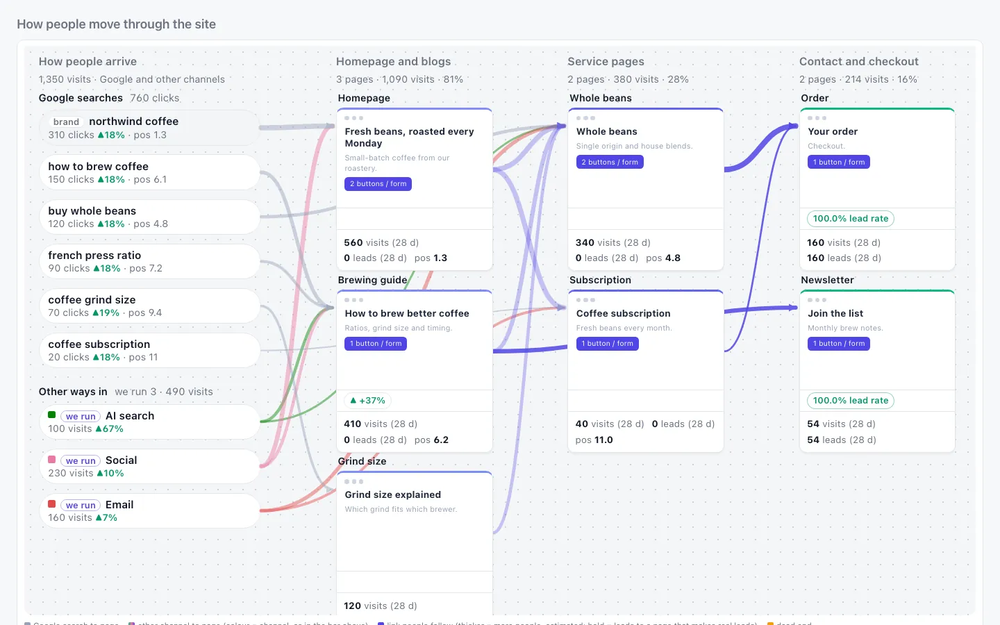
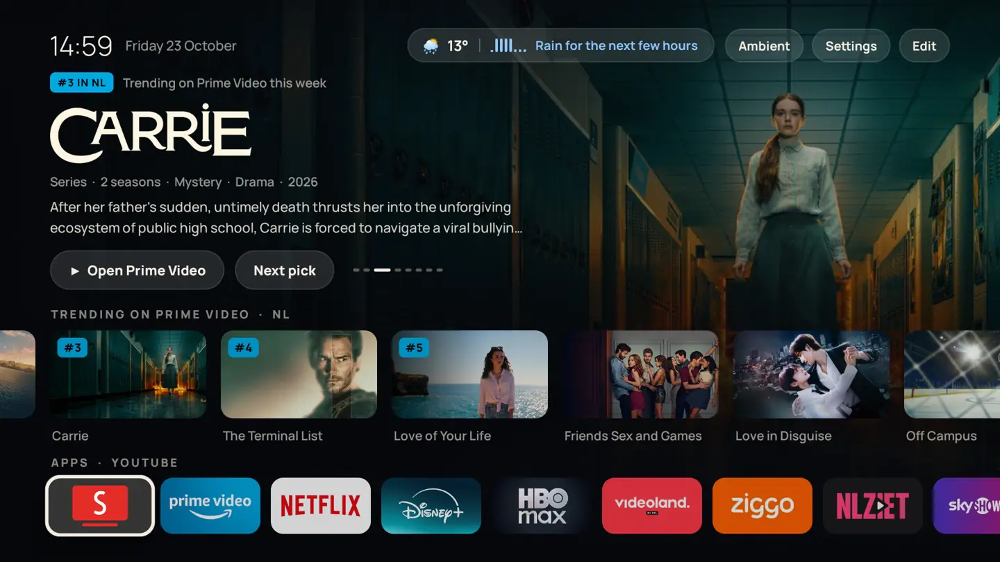
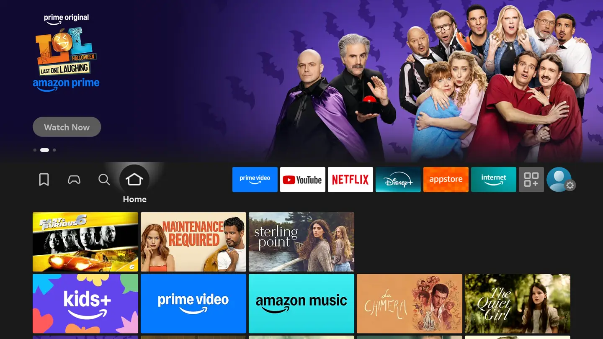
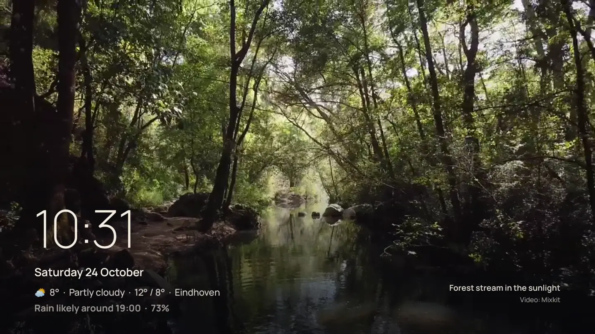

I bring Figma designs to life every day: landing pages, templates and components, with MCP servers and custom CLIs built by me and my team doing the heavy lifting. Webflow at my agency, custom WordPress in my daily work, and JavaScript, CSS and HTML under all of it.
Webflow
WordPress
JavaScript
GSAP
Next.js
Measure
Core Web Vitals, WCAG and technical SEO, fixed from traces and audits. This page audits itself further down, in your browser.
DevTools traces
GA4
Search Console
Looker Studio
schema
Reach
Multilingual sites, conversion tracking, and getting found in AI search. I run marketing too and hold a master's in content and media strategy, so I know what a page is for.
GTM
hreflang
AI search checks
Automate
I build AI agents with Claude Code every day, each with a narrow job and a person approving what goes out. Make.com and n8n cover the rest, so the repeated work stops being anyone's job.
Claude Code
agents
MCP
Make.com
n8n
Python
Right now
I work at an agency in Eindhoven as a developer who also does marketing. Too much of the week was the same work repeated, so I started replacing it with software. Everything below runs on invented data.
I live in the terminal
Claude on top, the rest in the harness
Most of my day runs from a terminal. Claude Code sits on top and does the bulk of it. Under it I experiment with Codex, Antigravity and whatever comes next, and I am the human in the loop. That mostly means pressing y, and knowing when to press n.
The status bar is the harness showing itself: usage per agent, context, the state of the repo and how many agents are running. Same skills and same checks, whichever model does the job.
Claude Code
Codex
Antigravity
Gemini CLI
Invented session. It waits for you.
The dashboard
One screen for a whole marketing team's week
The map shows how people move through a site: what they search, where they land and where they convert. Thicker lines mean more people, so the weak spots are visible at a glance.
Python
JavaScript
Claude Code
Demo mode: invented data only.
localhost, demo mode

Where people flow
Try it yourself
From the map, the system ranks the next moves from the data. A person picks one, and the result gets measured at 28 and 56 days. Here it is on an invented coffee shop. Pick a move and watch the flow change.
Invented shop, invented numbers.
Clean the data first
GA4 and Looker Studio dashboards
Most reports count too much: staff logging in, bots, a page view tagged as a conversion. I set up GA4 and GTM, take that noise out, and build Looker Studio and custom dashboards per channel, with a line in plain words under the numbers so a marketing team knows what to do next.
Switch between raw and cleaned, then pick a channel. The shop and its numbers are invented.
GA4
Looker Studio
GTM
Search Console
Cleaned Raw Change made
Show as a table
Run the pipeline
The agent loop behind it
I designed and built the system alone. It notices work, sends subagents out for the facts in parallel, and loops each draft through checks until it passes. A person decides what goes out, the result gets measured, and each lesson makes the next run quicker. Try it: nothing passes Decision until you click, and a rejected draft goes back round.
0 waiting for you
Review on the page
A Chrome extension for reviewing changes
Change lists get skimmed. So I built an extension that walks people through what changed, on the live page itself. Click through this invented coffee site to see how a review feels.
Manifest V3
JavaScript
northwind-coffee.example
Home | Northwind
Northwind Coffee
Welcome to our website
Order beans
Photo
Less noise for Claude
Tooling for Claude Code
An agent is only as good as what it reads. With my team I write CLIs and MCP servers that turn bulky API responses into the few lines Claude needs, a skill library that stores every lesson so it gets applied on the next run, and an Obsidian vault that keeps what we learn findable.
Python
MCP
Claude Code skills
Obsidian
This page, live
Production websites
Custom themes, plugins, JavaScript components and multilingual sites, with speed and accessibility work done from traces and audits. Here is that habit on this page: these results are measured in your browser right now, nothing is hard-coded.
PHP
WordPress
WooCommerce
SCSS
JavaScript
Built for my own life
When something annoys me, I build the fix. Moving to the Netherlands gave me plenty: an exam, a housing market, a TV full of ads. These all run in my real life, and I built them with Claude Code.
DutchMaster
An AI Dutch tutor I built because I had to pass B1 myself, so every screen got tested by someone with an exam date. Lars holds spoken conversations, the trainer covers the 1,000 most useful words, and lessons follow paths you choose.
A background service that watches Dutch rental sites around the clock, scores each listing and pushes the good ones to Telegram. The hard part was staying online: sites block scrapers differently, so the fetcher remembers which browser fingerprint worked per host.
Invented listings. The real alert goes to Telegram.
def get(url, method="GET", json_body=None, browser=True):
host = _host(url)
order = [_prefer[host]] if host in _prefer else []
order += [f for f in FINGERPRINTS if f not in order]
last = ""for i, fp in enumerate(order[:4]):
try:
r = _session(fp).request(method, url, json=json_body, timeout=40,
headers={"Accept-Language": "nl-NL,nl;q=0.9,en;q=0.8"})
except Exception as e:
last = f"{type(e).__name__}: {str(e)[:80]}"continueif r.status_code == 200and not _is_challenge(r):
_prefer[host] = fp
return r.text
Radar
My own trend radar for AI agents, SEO and AI search. Every Monday it reads 32 trusted sources, drops the hype and writes at most three cards, each with a 15-minute action. It counts what I adopt, not what I read, and ranks its sources on that.
Amazon's home screen was mostly ads, so I replaced it. Thuis is a native Android launcher I wrote for my Fire TV: what's trending in the Netherlands, a rain forecast, and an ambient mode when nobody's watching. Plain Java, built without Gradle, and the Amazon bloat is switched off.
Java
Android SDK
TMDB
Open-Meteo
adb



Content bot
One topic in, three pieces out: a LinkedIn post, an email hook and a blog article, generated in parallel with the Claude API. Then it stops at a review gate, because nothing posts until a human approves it.
The digital agency I co-founded. Years of websites from brief to launch, which is where I learned to work with people who are paying for the result. Today my focus and my work are here in the Netherlands.
Radar's sibling: a weekly plan for Eindhoven with places to go, food to try and things to learn. I built it after moving here, to get out more.
GitHub Actions
PWA
Flight watch
Checks fares every five minutes and alerts me on Telegram when the soonest cheap flight appears.
Python
SQLite
Telegram Bot API
Content and media strategy
MA Content & Media Strategy, NHL Stenden, 2026
I studied software engineering first, then took this master's to understand the human part: why people read, trust and act. So a marketing brief makes sense to me before I open an editor, and I can say why a page should exist as well as build it. I stay current by following the field on X, and Radar does the rest.
Data-driven strategy
Google Analytics 4 certification, and a Looker Studio dashboard built on live GA4 data from my agency.
Applied AI
From JavaScript and React to Make.com scenarios, including a recruitment pipeline that scores CVs. Finished with Anthropic's Claude Code in Action certificate.